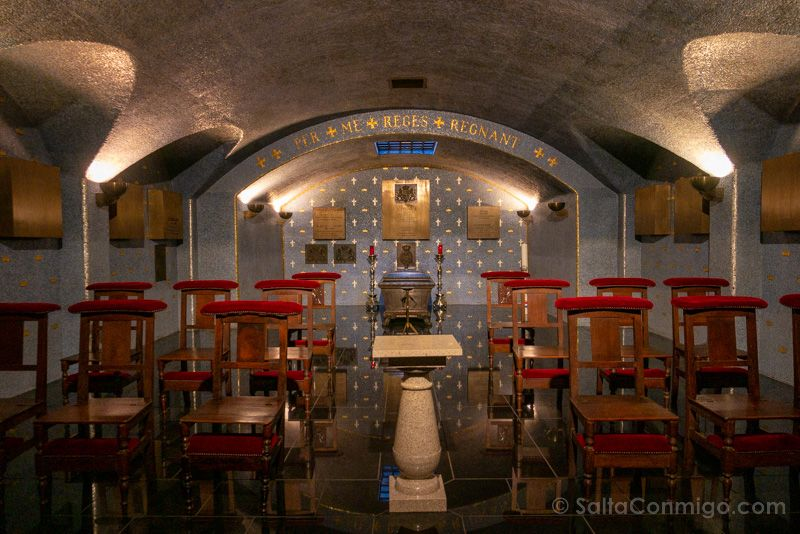
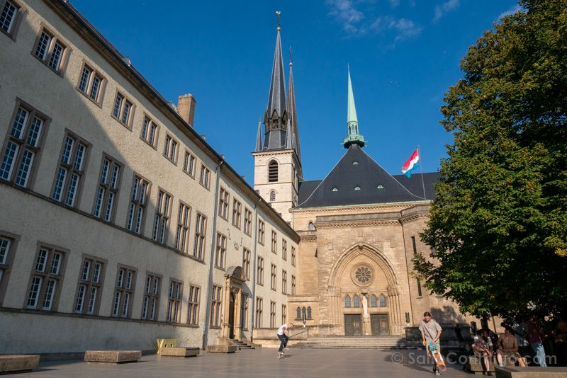

Luxemburgo, un pequeño país rodeado por Bélgica, Francia y Alemania, es una joya escondida que combina historia, naturaleza y modernidad. Su capital, también llamada Luxemburgo, ofrece un casco antiguo declarado Patrimonio de la Humanidad por la UNESCO, con fortalezas medievales, puentes majestuosos y vistas panorámicas.
Si buscas una experiencia inolvidable en Luxemburgo, el city hotel es tu mejor elección. Situado en pleno
corazón de la ciudad, combina el encanto histórico con comodidades modernas de primer nivel. Desde sus
habitaciones luminosas y cuidadosamente decoradas hasta sus vistas panorámicas del casco antiguo, cada
detalle está pensado para tu descanso y disfrute.
Después de un día explorando fortalezas medievales y callejuelas empedradas, nada mejor que relajarte en su
spa, disfrutar de una cena gourmet en su restaurante o tomar una copa en su terraza con vistas al valle.
Además, su ubicación privilegiada te permite llegar caminando a los principales puntos turísticos, tiendas y
restaurantes.
La música en Luxemburgo refleja la diversidad cultural del país, con influencias francesas, alemanas y
luxemburguesas que se entrelazan en sus sonidos. Una canción que captura el espíritu local es “Ech sinn aus dem
Lëtzebuerg” del artista Serge Tonnar. Este tema, cantado en luxemburgués, es un himno moderno a la identidad
nacional, con una mezcla de folk, pop y letras que celebran el orgullo de pertenecer a esta tierra.
La canción transmite cercanía, autenticidad y un profundo amor por las raíces luxemburguesas. Es ideal para
acompañar tu visita al país, ya que te conecta emocionalmente con su gente y su historia. Escucharla mientras
recorres las calles del casco antiguo o los paisajes verdes del Mullerthal añade una dimensión especial a la
experiencia.
A continuación, puedes escuchar esta canción para sumergirte en el ambiente musical de Luxemburgo:
Lo primero que ver en la Ciudad de Luxemburgo? Pues su centro político. Nos vamos al Palacio Gran Ducal, el palacio del jefe de estado del país: el gran duque. Se reconstruyó a finales del siglo XVI sobre las ruinas del antiguo ayuntamiento. Seguro que te llama la atención la fachada con arabescos renacentistas originales, aunque el edificio tiene muchos añadidos posteriores, barrocos y hasta del siglo XIX. Justo al lado está la Cámara de los Diputados.


Una visita obligada en la Ciudad de Luxemburgo es la Mariendoum. Ese es el nombre luxemburgués de la Catedral de Notre-Dame, la antigua iglesia jesuita de la ciudad, con su mezcla de estilos –gótico tardío, renacentista, barroco…–. La joya de la catedral está un poco “escondida” y es que está en la cripta y no todo el mundo baja. No dejes de hacerlo: el cenotafio de Juan el Ciego, del siglo XIV, lo merece.
 